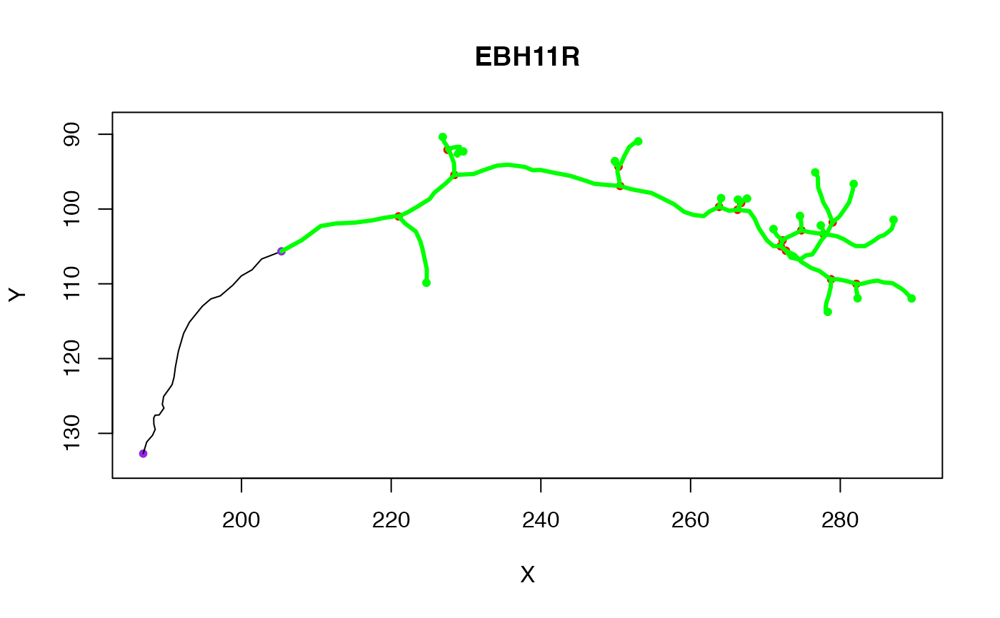

prune_vertices removes vertices from a neuron
prune_edges removes edges (and any unreferenced vertices)
prune_vertices(x, verticestoprune, invert = FALSE, ...) prune_edges(x, edges, invert = FALSE, ...)
| x | A |
|---|---|
| verticestoprune | An integer vector describing which vertices to remove. |
| invert | Whether to keep vertices rather than dropping them (default FALSE). |
| ... | Additional arguments passed to |
| edges | The edges to remove. One of i) an Nx2 matrix, each row
specifying a single edge defined by its raw edge id, ii) an integer
vector defining a path of raw vertex ids or iii) an |
A pruned neuron
These are relatively low-level functions and you will probably want
to use subset.neuron or prune.neuron and
friends in many cases.
Note that prune_vertices and prune_edges both use raw
vertex ids to specify the vertices/edges to be removed. If you want to use
the id in the PointNo field, then you must translate yourself (see
examples).
Both prune_vertices and prune_edges first convert their input
x to the ngraph representation of the neuron before
removing points. The input x can therefore be in any form compatible
with as.ngraph including an existing ngraph. There is
an additional requirement that the input must be compatible with
xyzmatrix if invert=TRUE.
Note that the edges argument of prune_edges must specify a
path traversing a set of vertices in a valid order. However if the input is
a matrix or vector the direction of each individual edge in this path is
ignored. So if your neuron has edges 2->1 2->3 3->4 then an edge sequence
1:3 would successfully delete 2 edges.
# use the PointNo field (= the original id from an SWC file) n2=prune_vertices(n, match(26:30, n$d$PointNo)) y=prune_edges(Cell07PNs[[1]], edges=1:25) # remove the spine of a neuron spine_ids=spine(Cell07PNs[[1]], rval='ids') pruned=prune_edges(Cell07PNs[[1]], spine_ids) # NB this is subtly different from this, which removes vertices along the # spine *even* if they are part of an edge that is outside the spine. pruned2=prune_vertices(Cell07PNs[[1]], spine_ids)